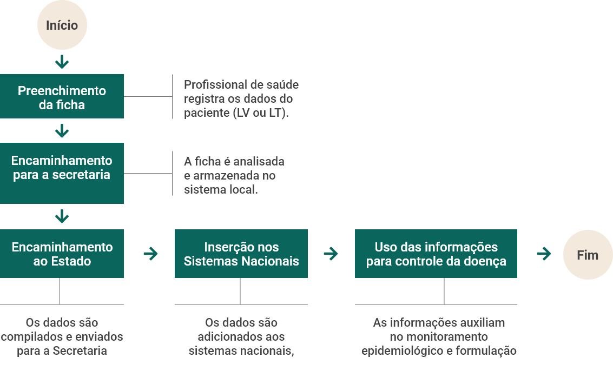

Aula 2
Vigilância epidemiológica e os métodos de vigilância
Na aula anterior, foram abordados diversos aspectos relacionados às leishmanioses e conceitos introdutórios sobre a vigilância epidemiológica. Agora, exploraremos detalhadamente os métodos de coleta, análise, interpretação e divulgação dos dados de vigilância, esclarecendo ainda mais como esses processos orientam as decisões estratégicas contra a leishmaniose tegumentar (LT) e a leishmaniose visceral (LV).
Serão apresentados o processo de notificação compulsória de casos e óbitos, realizado por meio das fichas de notificação e investigação, e os sistemas de informação em saúde mais utilizados na área. Além disso, serão demonstrados os principais indicadores epidemiológicos aplicados na vigilância das leishmanioses e como eles são utilizados para a estratificação do risco de ocorrências nos municípios brasileiros. Também serão apresentadas fontes importantes para a obtenção de informações geradas a partir dos dados de vigilância e discutidos aspectos da “Saúde Única”, uma abordagem que valoriza a integração entre saúde humana, animal, vegetal e ambiental.
OBJETIVOS:
Ao final desta aula, esperamos que você seja capaz de:
- Identificar as ferramentas de notificação e os principais sistemas de informação em saúde relacionados às leishmanioses;
- Demonstrar os indicadores utilizados na vigilância epidemiológica e sua importância na priorização das ações de controle;
- Relacionar os conhecimentos de vigilância epidemiológica com aspectos integrados da saúde humana, animal e ambiental na perspectiva de Uma Só Saúde.
Introdução
Para a execução de ações adequadas de prevenção e controle, e para o entendimento do perfil epidemiológico das leishmanioses, é necessário que existam dados de qualidade, provenientes de diferentes fontes. Só assim, será possível:
- Realizar um acompanhamento válido das tendências das ocorrências;
- Conhecer as características dos casos;
- Identificar as infecções que ocorreram na própria região analisada (autóctones) ou que tenham sido importadas de outras áreas;
- Realizar a busca ativa de casos novos;
- Direcionar estratégias e planejar as políticas e ações em saúde.
A LV e a LT são doenças de notificação compulsória no Brasil. A notificação compulsória é a comunicação obrigatória à autoridade de saúde, realizada pelos profissionais de saúde ou responsáveis pelos estabelecimentos de saúde, públicos ou privados, sobre a ocorrência de suspeita ou confirmação de doença, agravo ou evento de saúde pública. É crucial que todos os casos de LV e LT sejam notificados e que a notificação seja feita de maneira correta. Vale ressaltar também que a responsabilidade da notificação não se restringe aos médicos.
A lista nacional de doenças e agravos de notificação compulsória é divulgada pelo Ministério da Saúde. Para que uma doença esteja nessa lista, são consideradas características que possam apresentar riscos à saúde pública, dentre elas o potencial para ocorrência de surtos ou epidemias, alterações no padrão clínico-epidemiológico, potencial de disseminação, magnitude, gravidade, severidade, transcendência e vulnerabilidade na população.
Nesse contexto, os casos suspeitos e confirmados de LV e os casos confirmados de LT devem ser notificados e investigados pelos serviços de saúde. Na LT, um caso confirmado é aquele que atende aos critérios, seja para a leishmaniose cutânea ou para a leishmaniose mucosa. A confirmação da LT pode se dar por diagnóstico laboratorial ou, na impossibilidade da realização de testes diagnósticos, apenas pelo critério clínico epidemiológico. Já na LV, em áreas onde ocorre a transmissão, todo paciente com febre e esplenomegalia é considerado um caso suspeito e deve ser notificado. Já os casos confirmados assim como na LT, são aqueles que cumpriram o critério de confirmação laboratorial ou clínico epidemiológico.
Na tabela abaixo estão as principais estratégias de detecção dos casos de Leishmaniose no Brasil:
| Formas de Detecção | Descrição |
|---|---|
| Demanda Espontânea | O paciente percebe os sintomas e busca atendimento diretamente nos serviços de saúde. |
| Busca Ativa | Profissionais de saúde realizam investigações ativas em áreas de transmissão para encontrar novos casos. |
| Visitas Domiciliares | Profissionais de saúde realizam visitas às casas dos moradores em regiões endêmicas para verificar sintomas e orientar sobre a doença. |
| Encaminhamento pela Atenção Primária | Profissionais das unidades básicas de saúde identificam casos suspeitos e os encaminham para confirmação e |
Deve-se destacar ainda que todos os supostos óbitos por LV e LT devem ser investigados, para que se estabeleça a gravidade da doença e para que as causas dos óbitos sejam determinadas, diferenciando as complicações relacionadas à leishmaniose de outras condições. Dentre os objetivos da vigilância das leishmanioses, está o oferecimento de condições para que os profissionais da rede de saúde diagnostiquem e tratem precocemente os casos. Essa estratégia é essencial para reduzir a morbidade e a mortalidade, para a formulação de políticas públicas mais eficazes e para a adequação das diretrizes clínicas.
Além da notificação de casos e óbitos, a vigilância das leishmanioses no Brasil utiliza informações complementares para a obtenção de dados demográficos, socioeconômicos, ambientais e de morbidade, bem como de eventos adversos a medicamentos, o que garante uma maior abrangência e qualidade das informações.
Focinho de cão mostrando lesões causadas pela Leishmaniose

No caso específico da Leishmaniose Visceral, a vigilância do reservatório canino também é essencial.
Os cães são os principais reservatórios da LV em ambientes urbanos, por isso, ações de vigilância incluem:
- Inquéritos sorológicos para monitoramento da infecção em cães;
- Uso de dados epidemiológicos para definir áreas de vigilância;
- Adoção de medidas preventivas e destino adequado dos animais infectados.
• As fichas de notificação e investigação
A atividade de coleta de informações para as ações de vigilância epidemiológica engloba a definição de quais dados são necessários para o conhecimento do problema e a elaboração de formulários apropriados para sua obtenção. A coleção sistemática dos dados, que se inicia no preenchimento dos formulários de coleta, e a produção e divulgação de informações em saúde constituem componentes essenciais do Sistema Único de Saúde (SUS).
Para compreender melhor como essas informações são organizadas e utilizadas no monitoramento das leishmanioses, veja a estrutura das fichas de notificação e investigação no recurso abaixo.
As fichas de notificação e investigação são instrumentos fundamentais para o registro de informações detalhadas sobre cada caso de LV e LT e contêm os elementos essenciais a serem coletados em uma investigação de rotina.
Após o preenchimento, os dados notificados nas fichas (que podem ser preenchidas em papel ou eletronicamente) são enviados a sistemas locais (como as secretarias municipais de saúde). Na sequência, as informações serão encaminhadas ao nível estadual e, posteriormente, ao nível nacional, quando serão inseridas nos sistemas nacionais de informação.
As fichas de notificação da LV e da LT são específicas, mas possuem algumas questões comuns, como a identificação do paciente, dados demográficos, ocupação, ocorrência de coinfecções (como com o HIV) e locais de residência. Ambas coletam informações sobre a data de início dos sintomas, o tratamento administrado, a evolução dos casos e os resultados dos exames laboratoriais.
Além das fichas de notificação e investigação de casos, a vigilância epidemiológica das leishmanioses envolve o preenchimento das fichas de investigação de óbitos para os casos fatais de LV e LT. Nelas, são registrados a data e o local do óbito, os resultados de exames laboratoriais, os tratamentos realizados, as comorbidades do paciente, o histórico clínico e as complicações que podem ter contribuído para o desfecho fatal. Essas informações são fundamentais para a avaliação da qualidade da assistência prestada e para ajustar as estratégias de vigilância, visando reduzir a letalidade associada às leishmanioses.
Fluxo das Fichas de Notificação e Investigação
Como se pode ver no gráfico acima, o fluxo adequado de dados entre a notificação inicial e os sistemas de informação é fundamental para garantir uma resposta ágil e o planejamento oportuno das ações nos níveis municipal, estadual e nacional.
As fichas de notificação da LV e da LT são específicas, mas possuem algumas questões comuns, como a identificação do paciente, dados demográficos, ocupação, ocorrência de coinfecções (como com o HIV) e locais de residência. Ambas coletam informações sobre a data de início dos sintomas, o tratamento administrado, a evolução dos casos e os resultados dos exames laboratoriais. Além disso, é importante determinar o Local Provável de Infecção (LPI), com base na história epidemiológica e na ocorrência de casos anteriores. As fichas de LT buscam ainda informações sobre as características das lesões.
Clique aqui para acessar as fichas de notificação de LV e LT.
Atenção
Além de ser necessário que todos os casos suspeitos de LV e todos os casos confirmados de LT sejam notificados, é fundamental que a notificação se dê de forma correta. Ou seja, não deve haver erros de preenchimento e, mesmo que algumas perguntas da ficha sejam definidas como complementares (não obrigatórias), é recomendado que todos os campos sejam informados, ainda que a informação seja negativa ou ignorada. A incompletude do preenchimento das fichas de notificação, especialmente para algumas questões, é ainda um problema relevante para a análise do perfil epidemiológico das leishmanioses no Brasil.
A vigilância epidemiológica das leishmanioses envolve também o preenchimento das fichas de investigação de óbitos para os casos fatais de LV e LT. Nelas, são registradas a data e o local do óbito, os resultados de exames laboratoriais, os tratamentos realizados, as comorbidades do paciente, o histórico clínico e as complicações que podem ter contribuído para o desfecho fatal. Essas informações são fundamentais para a avaliação da qualidade da assistência prestada e para ajustar as estratégias de vigilância, visando reduzir a letalidade associada às leishmanioses.
Os sistemas de informação em saúde na vigilância das leishmanioses
Os sistemas de informação em saúde centralizam os dados sobre a ocorrência de casos e óbitos, permitindo o monitoramento contínuo da situação epidemiológica e a tomada de decisões mais embasadas.
No Brasil, os principais sistemas utilizados na vigilância epidemiológica das leishmanioses são o Sistema de Informação de Agravos de Notificação (SINAN), que registra e acompanha os casos de doenças de notificação compulsória no país, e o Sistema de Informações sobre Mortalidade (SIM), que registra e investiga todos os óbitos (incluindo os fetais) que ocorrem no território nacional. Além desses, a Organização Pan-Americana da Saúde (OPAS) desenvolveu o Sisleish, um sistema de informação que monitora a situação das leishmanioses em todo o continente americano.
A integração da análise dos dados dos sistemas de informação possibilita que avaliações mais completas e abrangentes sejam conduzidas e que seja minimizada a perda de informações sobre os casos e óbitos.
• Sistema de Informação de Agravos de Notificação (SINAN)
O SINAN é alimentado pelas fichas de notificação e investigação, apresentadas na seção 1.1. Atualmente, o SINAN é a principal fonte para o estudo da história natural das leishmanioses, sua magnitude como problema de saúde e também para a formulação de hipóteses epidemiológicas sobre os contextos de transmissão.
Saiba Mais
O Sistema de Informação de Agravos de Notificação (SINAN) é a principal fonte de dados sobre leishmanioses no Brasil, permitindo análises epidemiológicas e a formulação de políticas públicas. Os dados anonimizados estão disponíveis para consulta na plataforma DataSUS, organizados por doença e ano de notificação.
Os dados abertos e anonimizados do SINAN estão disponíveis na plataforma DataSUS, organizados por doença e agravo, de acordo com o ano de notificação. A base de dados de LV e LT é atualizada periodicamente, conforme a consolidação e validação dos dados enviados pelas unidades federativas, trabalho realizado pelas áreas técnicas responsáveis pela LV e LT no Ministério da Saúde. No âmbito federal do serviço de saúde, são realizadas e divulgadas análises epidemiológicas dos dados em nível nacional.
• Sistema de Informações sobre Mortalidade (SIM)
O documento base das informações inseridas no SIM é a Declaração de Óbito (DO), um instrumento jurídico hábil para a lavratura do óbito em cartório de registro civil, utilizado tanto para fins legais quanto para a produção de dados de saúde pública. O preenchimento e a assinatura da DO estão sob responsabilidade ética e jurídica dos médicos. As DOs são preenchidas nas unidades notificadoras (como os estabelecimentos e serviços de saúde e os Serviço de Verificação de Óbitos), e recolhidas, regularmente, pelas Secretarias Municipais de Saúde.
| Aspecto | SINAN | SIN |
|---|---|---|
| Fonte de Dados | Fichas de notificação e investigação | Declaração de Óbito (DO) |
| Principal Função | Monitoramento epidemiológico e histórico da doença. | Análise de mortalidade e impacto na saúde pública |
| Variáveis Coletadas | Identificação do paciente, exames laboratoriais, tratamento | Causa básica do óbito, idade, sexo, escolaridade, raça/cor |
| Acesso aos Dados | Plataforma DataSUS | Plataforma DataSUS |
Além de registrar informações sobre a causa básica do óbito e sobre as causas associadas, o SIM permite que sejam coletadas outras variáveis (como idade, sexo, escolaridade e raça/cor) que também são importantes na análise da situação epidemiológica das leishmanioses. Por meio do SIM, podem ser obtidas informações fundamentais para a avaliação do impacto da mortalidade pelas leishmanioses e para análise da qualidade da atenção à saúde. Além disso, o SIM pode ser útil como fonte de informação nos casos em que há falhas de preenchimento de registros dos casos e óbitos no SINAN.
Os dados abertos e anonimizados do SIM, como os do SINAN, estão disponíveis na plataforma DataSUS.
• Sistema de informações regionais sobre as leishmanioses (Sisleish)
O Sisleish é um sistema de informação em saúde online, criado para facilitar a inclusão e a consolidação de dados sobre a LV e a LT no continente americano. Lançado em 2012, o Sisleish permite o monitoramento de indicadores epidemiológicos e operacionais. Os dados utilizados são fornecidos pelos Programas Nacionais de Leishmaniose ou pelos órgãos equivalentes dos países que notificam casos na região.
Atenção
O Sisleish é um sistema internacional criado para monitorar casos de Leishmaniose Visceral (LV) e Tegumentar (LT) na América Latina. Essas informações consolidadas são publicadas anualmente no Informe Epidemiológico das Américas, disponibilizado pela OPAS.
Processamento, análise e interpretação de dados
A análise válida e oportuna das informações coletadas nas ações de vigilância das leishmanioses é fundamental para o desencadeamento de ações efetivas de prevenção e controle. Para que isso ocorra, os dados devem ser submetidos a etapas de processamento, que incluem:
- A avaliação da qualidade do preenchimento;
- A busca e a correção de informações incompletas e imprecisas;
- A verificação de inconsistências e a eliminação de duplicidades.
Embora o processamento final (antes da inserção nos sistemas de informação) seja feito no nível nacional, é recomendado que os dados sejam consolidados e analisados também nas instâncias locais.
A análise e a interpretação dos dados devem levar em consideração aspectos como o perfil dos casos, evolução das ocorrências ao longo do tempo, variações entre regiões, os aspectos clínicos e epidemiológicos e os possíveis fatores explicativos.
Os dados públicos e anônimos disponíveis no SINAN e do SIM podem ser convertidos em tabelas e lidos em programas ou aplicativos comumente utilizados para analisar bases de dados. Dessa forma, além de serem utilizados nos serviços de saúde, os dados dos sistemas de informação podem ser acessados por qualquer indivíduo interessado em analisá-los.
A Qualidade dos Dados é Essencial!
Para que as análises epidemiológicas das leishmanioses sejam confiáveis, é indispensável
garantir o correto preenchimento dos registros e a eliminação de inconsistências nos dados
coletados. Erros ou dados ausentes podem comprometer a interpretação e, consequentemente, as
decisões de saúde pública!
Critérios para a classificação e priorização de áreas para vigilância e controle das leishmanioses no Brasil
A classificação das áreas para vigilância e controle da LV e da LT no Brasil se baseia em critérios epidemiológicos, que são definidos a partir dos dados notificados nos serviços de vigilância. A classificação é importante para que sejam identificados os perfis de transmissão e, a partir deles, definidas quais ações de vigilância, monitoramento e controle serão adotadas.
• Conceitos para definição das áreas de transmissão
No Brasil, os municípios são classificados com base em seus perfis de transmissão de LV e LT. Assim, eles podem ser categorizados como “sem transmissão” ou “silenciosos”, caso não haja o registro de casos autóctones conhecidos, ou como “vulneráveis”, quando não há transmissão, mas existe uma alta possibilidade de introdução ou circulação de Leishmania. Os municípios podem ainda ser definidos como “receptivos”, um critério que se refere à presença confirmada de vetores. Para a LV, há ainda os “municípios em investigação”, que são aqueles onde existem casos humanos ou caninos suspeitos aguardando confirmação diagnóstica.
No caso da definição de “municípios com transmissão”, para a LV, basta que tenha havido o registro de um caso autóctone humano, enquanto para a LT, o município deve ter histórico de casos humanos autóctones nos últimos três anos.
• Estratificação do risco de LV e LT no Brasil, por meio do indicador composto
A estratificação de risco dos municípios brasileiros com transmissão de LV e LT segue uma classificação adotada pela OPAS. Essa classificação é atualizada anualmente com os dados do último triênio, e utiliza como base o Índice Composto, descrito no tópico “Medidas de frequência relevantes nas análises epidemiológicas das leishmanioses”. É importante lembrar que esse índice considera tanto o número bruto de casos, quanto as taxas de incidência.
A partir dos valores obtidos no índice composto, os municípios são categorizados em um dos cinco níveis de intensidade de transmissão: baixa, média, alta, intensa e muito intensa. Essa estratificação orienta a priorização das ações de vigilância, prevenção e controle e busca que as intervenções adotadas sejam apropriadas ao nível de risco que cada município apresenta.
Recomenda-se também que os serviços municipais de vigilância estratifiquem seus territórios, para direcionar as intervenções aos contextos em que são mais necessárias e para que tenham maior potencial de efetividade.
Divulgação das Informações
A disseminação das informações provenientes das análises dos dados da vigilância epidemiológica das leishmanioses deve ocorrer de forma sistemática e abrangente em todos os níveis do sistema de saúde. A prática de compartilhar essas informações deve ocorrer em intervalos regulares e fornecer subsídios concretos para a tomada de decisões.
Para garantir o acesso às informações sobre a epidemiologia da LV e da LT, diferentes plataformas e publicações reúnem dados atualizados e análises detalhadas. Abaixo, estão algumas das principais fontes disponíveis para consulta:
- Disponibiliza informações sobre LV e LT, incluindo taxas de incidência, mortalidade e letalidade ao longo dos anos.
- Apresenta mapas epidemiológicos, publicações técnicas e orientações para o controle da doença.
- Contém as estratificações de risco da LV e LT dos municípios brasileiros, conforme o Índice Composto.
- Plataforma interativa que amplia o acesso a dados atualizados sobre a incidência e o comportamento epidemiológico da LV e LT.
- Disponibiliza visualizações gráficas detalhadas sobre sexo, faixa etária, raça, coinfecção com HIV e outros fatores epidemiológicos.
- Reúne informações de diversos países endêmicos, incluindo o Brasil.
- Apresenta gráficos e tabelas sobre a LV e a LT, além de análises do cumprimento das metas do Plano de Ação para Fortalecer a Vigilância e o Controle das Leishmanioses nas Américas 2017-2022.
Além disso, o informe epidemiológico das leishmanioses nas Américas, disponibilizado pela OPAS, reúne informações de vários países, incluindo o Brasil, e oferece um panorama abrangente das leishmanioses no continente. O informe permite a visualização de diversos gráficos e tabelas com dados específicos sobre a LV e a LT nos países endêmicos e apresenta análises do cumprimento das metas estabelecidas pelo Plano de Ação para Fortalecer a Vigilância e o Controle das Leishmanioses nas Américas 2017-2022.
Uma só Saúde e a vigilância epidemiológica das leishmanioses
A “Saúde Única”, também conhecida como “Uma Só Saúde”, refere-se a uma abordagem integrada que reconhece a interconexão entre a saúde humana, animal, vegetal e ambiental. Essa abordagem promove a interação, cooperação, coordenação e colaboração entre diversas disciplinas, profissionais, instituições e setores, visando oferecer soluções mais abrangentes e eficazes para os problemas de saúde.
Para refletir
Já parou para pensar na relação entre a saúde humana, animal e ambiental?
- A Leishmaniose Visceral e Tegumentar são zoonoses que dependem de vetores (insetos), reservatórios animais e fatores ambientais.
- Sem um ambiente saudável e sem o monitoramento adequado dos vetores e reservatórios, o controle da doença torna-se inviável.
- O aumento dos animais domésticos nas cidades e as mudanças climáticas podem afetar a transmissão das leishmanioses.
- Como você acha que essa abordagem integrada pode melhorar a prevenção e o controle da doença?
Ao atuar na implementação de respostas conjuntas e integradas, a abordagem de “Uma Só Saúde” possibilita o aprimoramento da vigilância, prevenção e controle das zoonoses, como as leishmanioses. Por serem doenças que envolvem diretamente a participação e a interação entre seres humanos, reservatórios animais e vetores, além de serem relacionadas a fatores ambientais, a LV e a LT sempre foram pensadas em um contexto de relações interdependentes, com medidas de vigilância não apenas dos casos humanos, conforme apresentado nesse material. Por outro lado, a incorporação da perspectiva de Saúde Única, além de fortalecer a conscientização sobre a integração entre esses aspectos, reforça que a saúde humana só será alcançada caso haja bem-estar animal e saúde ambiental. Isso é especialmente relevante no contexto atual, em que os animais de estimação são cada vez mais comuns nas famílias brasileiras e as mudanças climáticas são vivenciadas de forma cada vez mais intensa.
O conceito de Uma só saúde amplia as possibilidades de abordagens e os perfis profissionais que devem atuar nas ações de vigilância, favorecendo o direcionamento de recursos, a avaliação de aspectos socioeconômicos e culturais, o trabalho conjunto e a elaboração de estratégias mais efetivas e sustentáveis.
Ficou interessado em como atua “Uma só saúde” no controle de endemias? Clique aqui e veja todo conteúdo disponível de Uma só Saúde para enriquecer seus conhecimentos!
Conclusão
Ao concluir este módulo, revisamos a importância da vigilância epidemiológica das leishmanioses e a necessidade de um sistema eficiente de coleta, análise e interpretação de dados, que possibilite um entendimento adequado do cenário epidemiológico em todo o território nacional. Os conteúdos abordados reforçam a importância dos dados oriundos da rotina dos serviços de saúde e do estabelecimento de critérios devidamente embasados para definir as ações de combate à LV e à LT.
À medida que avançamos para o próximo tópico, que aborda a vigilância vetorial, exploraremos a vigilância em saúde de forma ainda mais profunda e ampliaremos nossa visão sobre as leishmanioses e a Saúde Única.
Até a próxima aula!
• Exercício de fixação
Um município hipotético registrou, em 2021, 50 casos de Leishmaniose Visceral (LV) e 5 óbitos pela doença, numa população total de 150.000 habitantes. Com base nesses números e considerando o papel das medidas epidemiológicas (incidência, mortalidade e letalidade) na definição de estratégias de vigilância e controle, qual seria a melhor interpretação para orientar o gestor local?